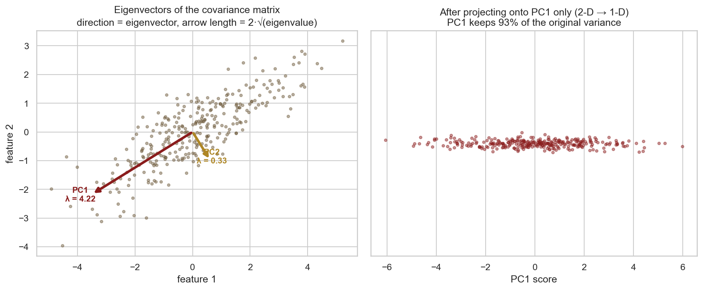
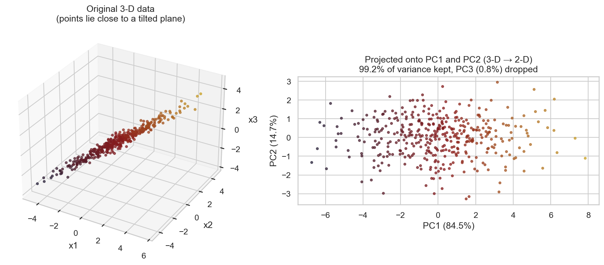
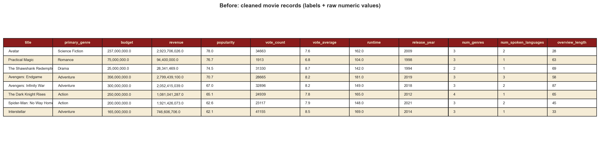
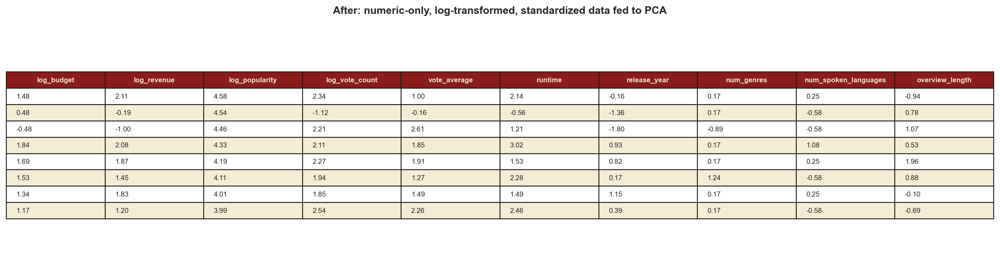
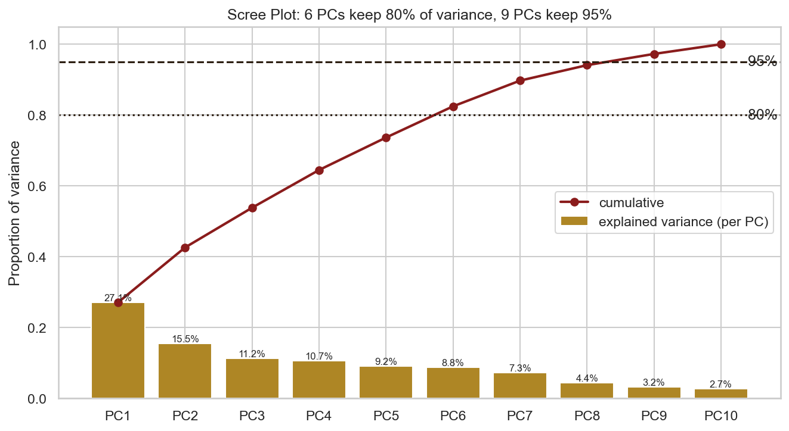
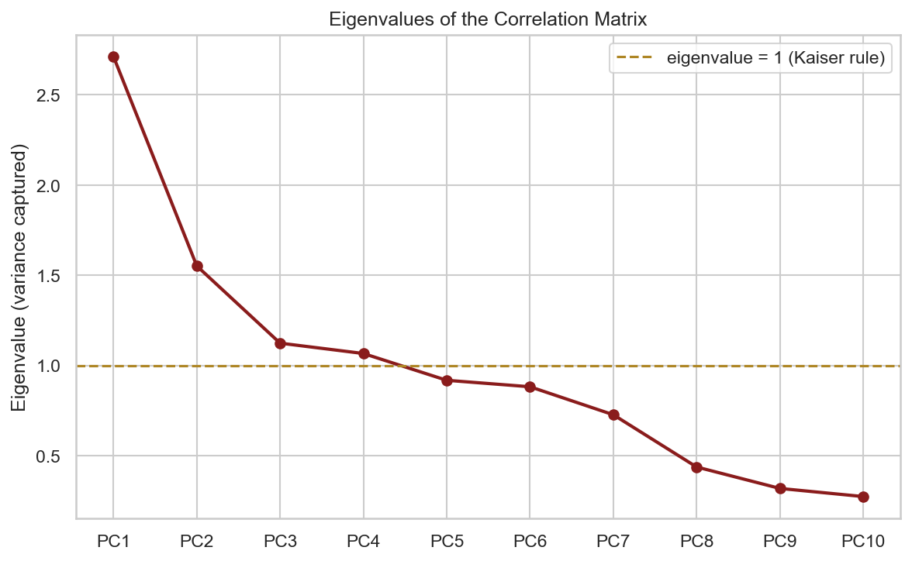
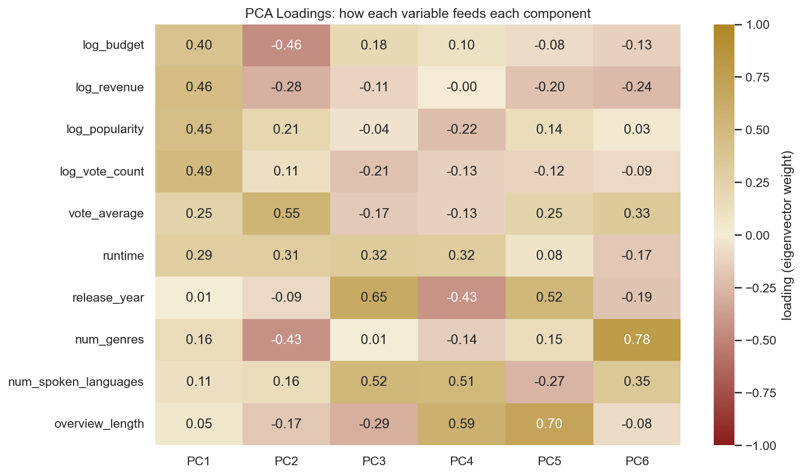
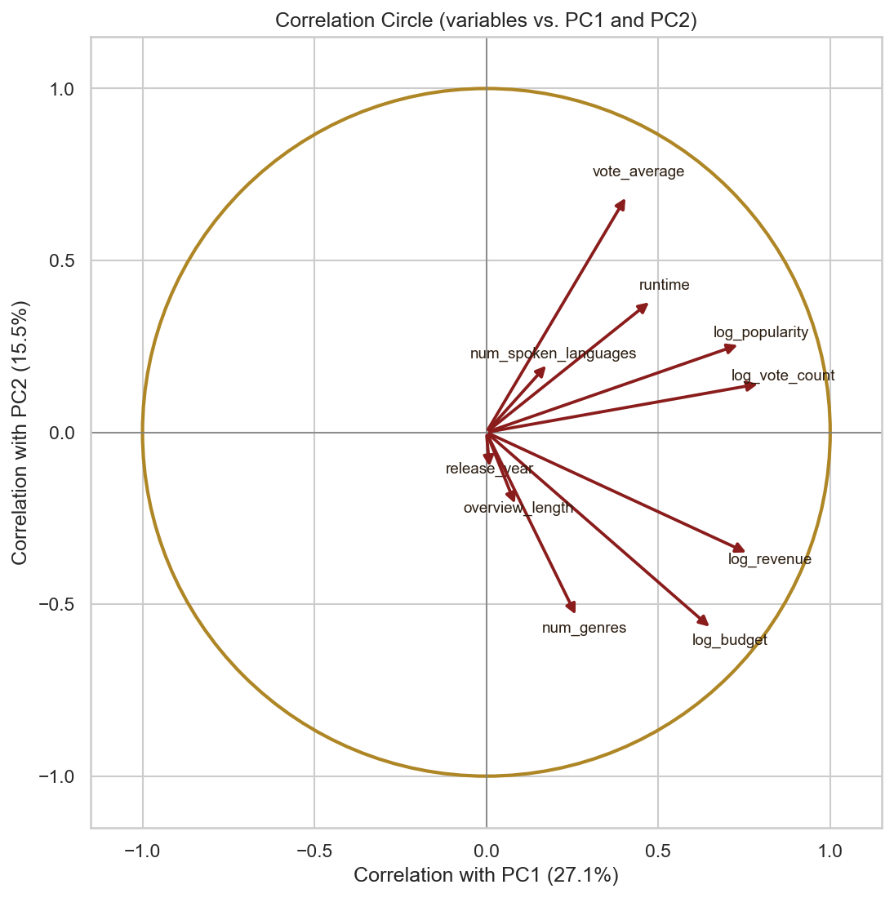
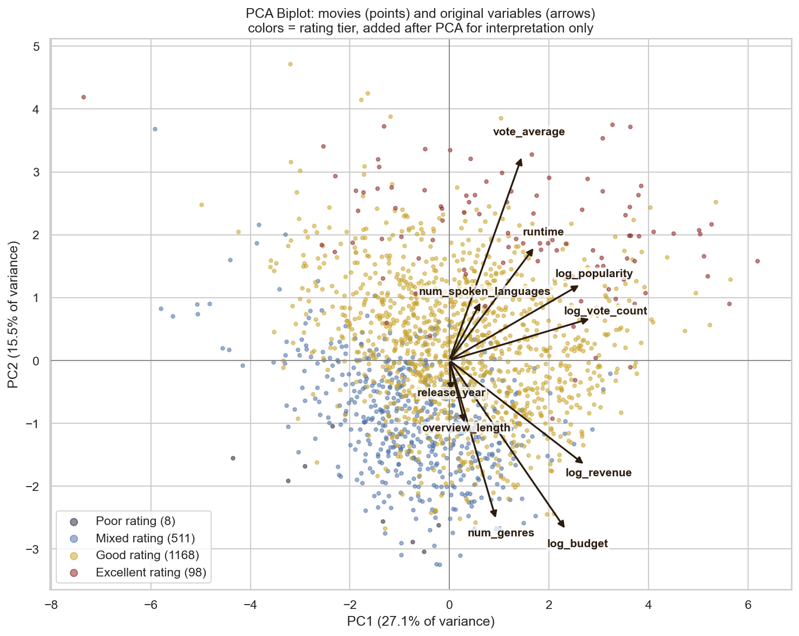
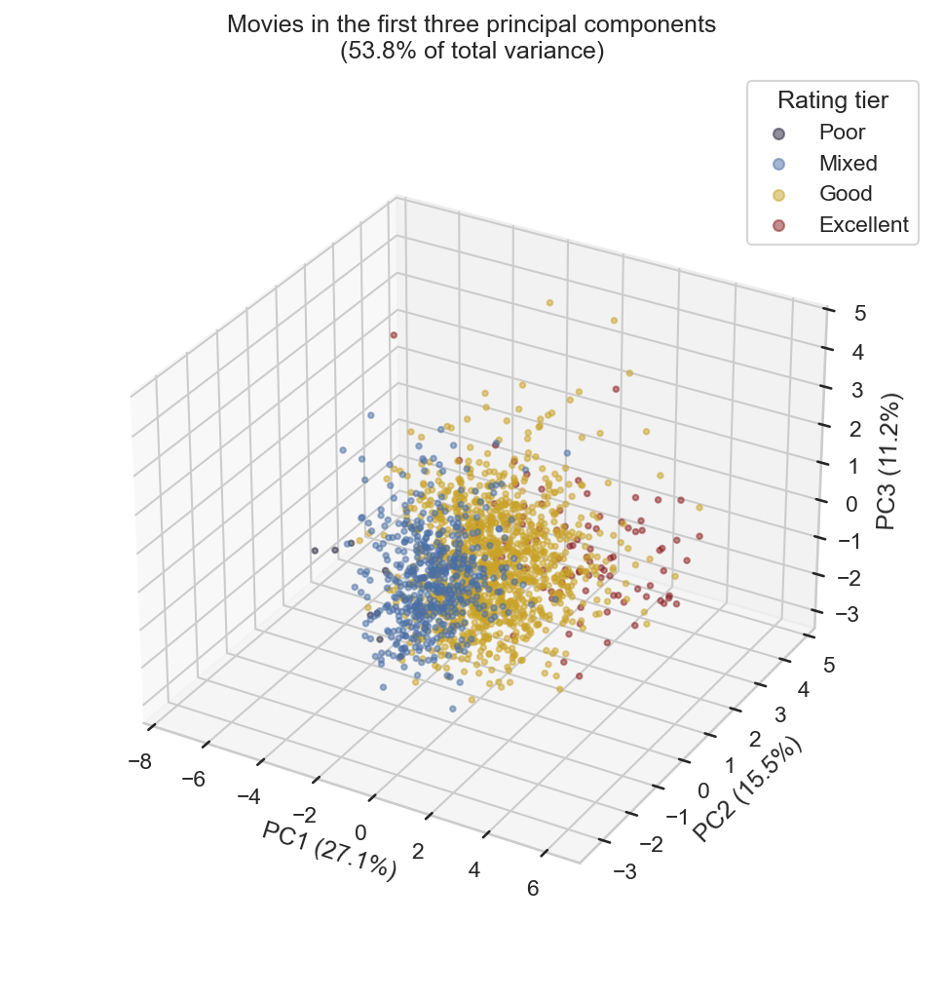

Principal Component Analysis (PCA)
Overview
Principal Component Analysis, or PCA, is an unsupervised method that gives a dataset a new set of axes. These new axes are called principal components, and each one is a weighted mix of the original columns. The first component points in the direction where the data is most spread out. The second one picks up the most leftover spread, but it has to be at a right angle to the first, so the two are uncorrelated. The rest follow the same rule.
Why does this help? Real variables tend to move together. In my movie data, budget, revenue and popularity usually go up at the same time. So instead of tracking all of them separately, a few components can hold most of the same information.
Eigenvalues and eigenvectors
This is the math that makes PCA work. After standardizing the data, PCA builds the
correlation (or covariance) matrix C. This matrix tells you how every pair of
variables moves together. An eigenvector v of C is
a special direction. When you multiply it by C, it only gets longer or shorter
and never turns: C v = λ v. The number λ is the
eigenvalue, and it tells you how much it got stretched.
Here is how these map to PCA:
- The eigenvectors are the principal components. Each one is a direction in the original feature space. The numbers inside it are called loadings, and they show how much each original variable feeds into that component.
- The eigenvalues tell you how much variance each component holds. If you sort them from biggest to smallest, you get the components in order of importance. Divide one eigenvalue by the total and you get the share of variance it explains.
Cis a symmetric matrix, so its eigenvectors are always at right angles to each other. That is exactly why the components end up uncorrelated.
What is dimensionality reduction and why do it?
Dimensionality reduction just means describing your data with fewer columns while losing as little as possible. With PCA, you keep the first few components and throw away the ones with tiny eigenvalues. This matters because data with lots of columns causes real problems:
- You can't look at it. We can only see two or three axes at a time. My ten column dataset would need 45 separate scatter plots, and none of them shows the full picture.
- The curse of dimensionality. Every extra dimension makes the data more spread out and sparse. Points also start to look about equally far apart, which hurts anything based on distance, like clustering or KNN.
- Repeated information. When columns are correlated, they are basically saying the same thing twice. This is called multicollinearity, and it makes models shaky and hard to read.
- Overfitting. More features give a model more room to learn noise instead of real patterns.
- Speed and memory. More columns simply cost more to store and process.
PCA helps with all of this. It folds correlated columns into a handful of uncorrelated ones, lets you drop the weak components that are mostly noise, and makes it possible to plot the data in 2D or 3D. There is a catch though. Each component is a blend of the original variables, so you have to read the loadings to figure out what it actually means.


Data Prep
PCA is picky about its input. The data has to be numeric, complete and on the same scale. Here is what I did to get there:
- Numbers only, no labels. PCA works with variances and correlations, and you can't compute those for text or categories. So I removed title, genre and rating tier. I only brought rating tier back later to color the plots.
- No missing values. I dropped movies that had no budget or revenue listed. That left me with 1,785 movies.
- Fixing skew. PCA chases variance, so a few giant blockbusters would end up defining the components on their own. To stop that, I applied
log(1 + x)to budget, revenue, popularity and vote count. - Standardizing. PCA is very sensitive to scale. If I left budget in raw dollars, its variance would be so huge that it would become PC1 by itself. I turned every column into a z score with mean 0 and standard deviation 1. This means PCA is really running on the correlation matrix, and every variable starts out equal.
I used ten numeric columns: budget, revenue,
popularity, vote_count, vote_average,
runtime, release_year, num_genres,
num_spoken_languages and overview_length. That is more than I used
for clustering. I wanted PCA to have more correlated structure to work with.


Code
I wrote the PCA in Python. It uses sklearn for StandardScaler and
PCA, plus pandas, numpy, matplotlib and
seaborn. One script does the whole thing. It preps the data, fits PCA, prints
the eigenvalues and loadings, and makes every chart you see on this page.
Here is the core of it:
X = df[FEATURES].astype(float)
X[LOG_FEATURES] = np.log1p(X[LOG_FEATURES]) # tame skew
X_scaled = StandardScaler().fit_transform(X) # mean 0, sd 1
pca = PCA().fit(X_scaled)
eigenvalues = pca.explained_variance_ # variance per component
loadings = pca.components_.T # eigenvectors (columns)
scores = pca.transform(X_scaled) # movies in PC space
cumulative = np.cumsum(pca.explained_variance_ratio_)Results
1. How much variance each component holds
| Component | Eigenvalue | Variance explained | Cumulative |
|---|---|---|---|
| PC1 | 2.71 | 27.1% | 27.1% |
| PC2 | 1.55 | 15.5% | 42.6% |
| PC3 | 1.12 | 11.2% | 53.8% |
| PC4 | 1.07 | 10.7% | 64.5% |
| PC5 | 0.92 | 9.2% | 73.7% |
| PC6 | 0.88 | 8.8% | 82.5% |
| PC7 | 0.73 | 7.3% | 89.7% |
| PC8 | 0.44 | 4.4% | 94.1% |
| PC9 | 0.32 | 3.2% | 97.3% |
| PC10 | 0.27 | 2.7% | 100% |
PC1 by itself explains 27% of the variance. To put that in context, each standardized column only carries 10% of the total, so PC1 is worth almost three of them. Add PC2 and you're at 42.6%. Add PC3 and you're at 53.8%.
Four components have an eigenvalue above 1. That is the Kaiser rule, a common cutoff for deciding which components are worth keeping, and those four cover 64.5%. To reach 80% I need 6 components, and to reach 95% I need 9.
After PC1 the variance is spread out pretty evenly. That makes sense. Release year, spoken languages and synopsis length don't really relate to the success numbers, so each of them needs its own component. The real squeezing happens in PC1 and PC2, where all the correlated success variables get packed into two axes.


2. How the variables relate to the components
I used three plots to show this. The loadings heatmap is the simplest. It just shows the eigenvector weights as a grid.
The correlation circle draws every variable as an arrow. Where the arrow points comes from how strongly that variable correlates with PC1 and PC2. Reading it is pretty easy. A long arrow that almost touches the circle means the variable is well captured by these two components. Two arrows pointing the same way are positively correlated. Arrows at a right angle have little to do with each other, and arrows pointing in opposite directions are negatively correlated.
The biplot puts those same arrows on top of the actual movies. If a movie sits out in the direction of an arrow, it scores high on that variable.
Reading the loadings, the first three components have a clear meaning:
- PC1 is overall size (27.1%). All the main success variables load positively on it. Vote count is 0.49, revenue 0.46, popularity 0.45, budget 0.40, runtime 0.29 and rating 0.25. A high PC1 score basically means the movie is big in every way. The top scorers are Avengers: Endgame, Avatar, Avengers: Infinity War, Titanic and Interstellar. At the bottom you find small films that few people saw, like Terrifier and Under Suspicion.
- PC2 is critical acclaim against the commercial formula (15.5%). Rating (0.55) and runtime (0.31) push one way. Budget, number of genres and revenue push the other way, with negative loadings of 0.46, 0.43 and 0.28. At the top are art films that critics love but that didn't cost much, like Chungking Express, Drive My Car and Farewell My Concubine. At the bottom are expensive family franchise films that mash many genres together and got weak reviews, like The Smurfs, Alvin and the Chipmunks and The Last Airbender.
- PC3 is about newer, more international and longer films (11.2%). Release year (0.65), spoken languages (0.52) and runtime (0.32) drive it. It has very little to do with commercial success.




Conclusions
The biggest thing PCA taught me is that movie success isn't one single thing. In my data it splits into two mostly separate parts.
- Size (PC1). Budget, revenue, popularity and the number of votes all go up and down together. That one "how big is this movie" axis covers over a quarter of the variation across all ten columns. So if you know a film's budget, you already have a decent idea of how many people will watch it and how much it will make.
- Acclaim (PC2). Ratings live on their own axis, almost at a right angle to size. Money does not buy good reviews. Budget and rating are actually a little negatively correlated. Films that throw in lots of genres to please everyone usually end up on the low acclaim side.
- The top rated films manage both. In the biplot, the "Excellent" movies sit in the corner where both axes are high. Big prestige films like Interstellar and The Dark Knight pull this off, but it doesn't happen often.
- Release timing and language are their own story. Release year, number of languages and synopsis length barely show up in the first two components. In this sample they aren't strongly linked to how well a movie does.
This fits with what I found in the clustering tab. Those clusters are mostly just different regions of this size and acclaim map. Going forward, PC1 and PC2 give me a short, uncorrelated two number summary of any movie: how commercially big it is and how well it was received.